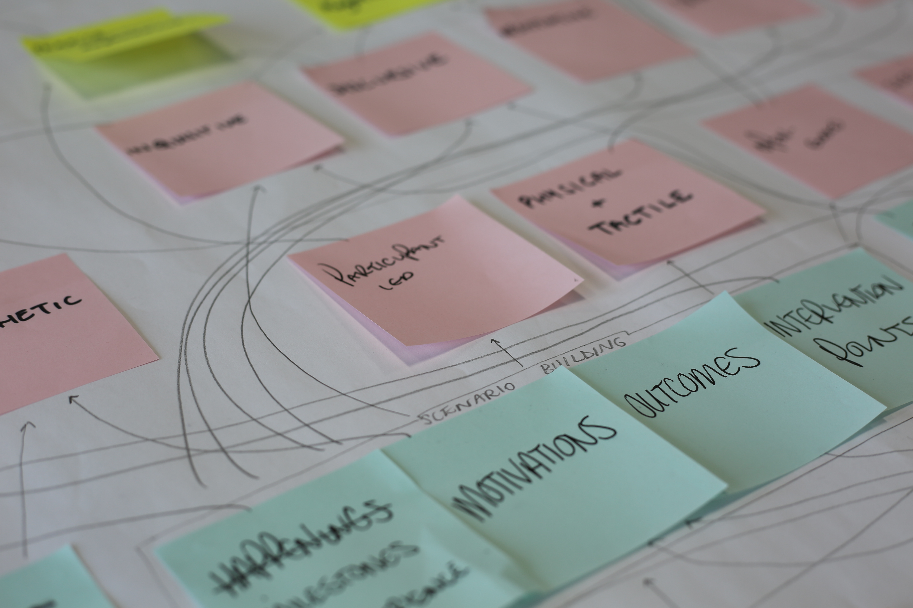
Σύμβουλοι στρατηγικής μέσω σχεδιασμού
Βοηθάμε ανθρώπους και επιχειρήσεις να πλοηγηθούν στην πολυπλοκότητα, να βρουν κατεύθυνση και να σχεδιάσουν λύσεις που λειτουργούν — από τη στρατηγική σαφήνεια μέχρι τη δημιουργία προϊόντων, υπηρεσιών και εμπειριών.
Η πρόκληση
Τρέχεις αλλά δεν μεγαλώνεις. Είσαι δραστήριος αλλά όχι αποτελεσματικός. Οι ιδέες σου μένουν στο χαρτί. Οι στόχοι υπάρχουν αλλά δεν τους καταλαβαίνει η ομάδα. Οι αποφάσεις παίρνονται αντιδραστικά, όχι στρατηγικά. Σου θυμίζει κάτι;
Το κοινό σε όλα αυτά δεν είναι έλλειψη πόρων, ταλέντου ή φιλοδοξίας. Είναι η απουσία στρατηγικής σαφήνειας — το κενό ανάμεσα σε αυτό που θέλει η επιχείρηση να πετύχει και σε αυτό που πραγματικά πετυχαίνει.
Το ονομάζουμε Το Κενό της Σαφήνειας. Το Locus υπάρχει για να το κλείσει — όχι απλά ονομάζοντάς το, αλλά μέσα από σχεδιαστική σκέψη, στρατηγική και τη δημιουργία πραγματικών λύσεων.
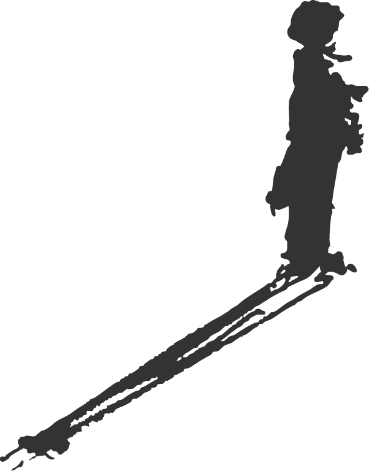
Η προσέγγισή μας
Η προσέγγισή μας προσαρμόζει το Double Diamond του Design Council UK σε αυτό που ονομάζουμε Design Funnel — ένα μοντέλο που αντικατοπτρίζει πώς πραγματικά εξελίσσεται η σχεδιαστική στρατηγική. Επενδύουμε δυσανάλογα στα πρώτα στάδια: κατανόηση της κατάστασης, ανάδειξη παραδοχών, πλαισίωση του σωστού ερωτήματος.
Αλλά η σαφήνεια είναι μόνο η αρχή. Σχεδιάζουμε και αναπτύσσουμε πραγματικές λύσεις: νέα προϊόντα, υπηρεσίες, εμπειρίες, επιχειρηματικά μοντέλα και συστήματα επικοινωνίας — είτε μέσω της δικής μας πρακτικής είτε ενεργοποιώντας το δίκτυο εξειδικευμένων συνεργατών μας.
Στον πυρήνα της δουλειάς μας βρίσκεται η λογική της συν-δημιουργίας. Δεν παραδίδουμε λύσεις από έξω — τις χτίζουμε μαζί σας. Η μέθοδός μας δομείται γύρω από έξι βασικές συνθήκες που κάνουν τη συνεργατική σκέψη παραγωγική.
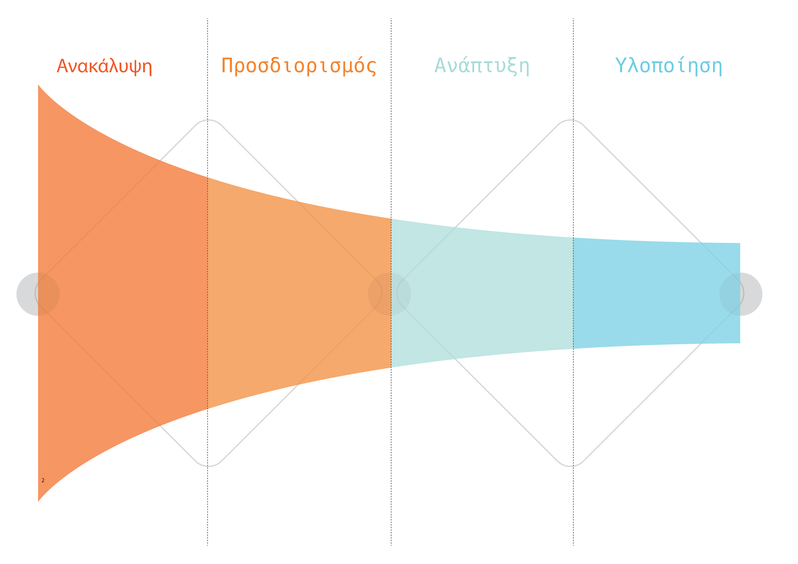
Ανακάλυψη
Ευρεία διερεύνηση. Έρευνα, παρατήρηση, εμπλοκή ενδιαφερομένων. Όλες οι παραδοχές είναι ανοιχτές σε αμφισβήτηση.
Προσδιορισμός
Σύνθεση και πλαισίωση. Τα ευρήματα μετατρέπονται σε σαφή διατύπωση της κεντρικής πρόκλησης ή ευκαιρίας.
Ανάπτυξη
Δημιουργία, πρωτοτυποποίηση και δοκιμή πιθανών λύσεων μέσα στο πλαίσιο που έχει καθοριστεί.
Υλοποίηση
Βελτιστοποίηση, εφαρμογή και παράδοση προϊόντων, υπηρεσιών, στρατηγικών και συστημάτων έτοιμων για τον πραγματικό κόσμο.
Τι κάνουμε
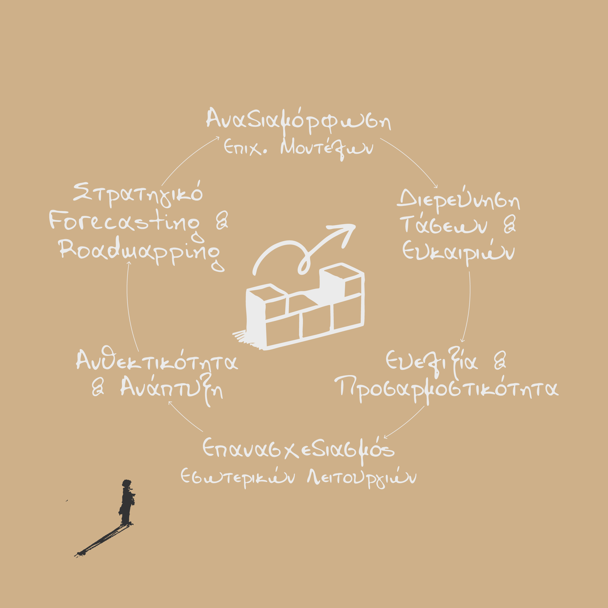
Όταν η επιχείρηση λειτουργεί — αλλά δεν μεγαλώνει.
Χαρτογράφηση ανταγωνισμού, στρατηγική διαφοροποίησης, διερεύνηση επιχειρηματικού μοντέλου. Για επιχειρήσεις που χρειάζονται να δουν την κατάστασή τους από ψηλά — και να σχεδιάσουν μια νέα πορεία.
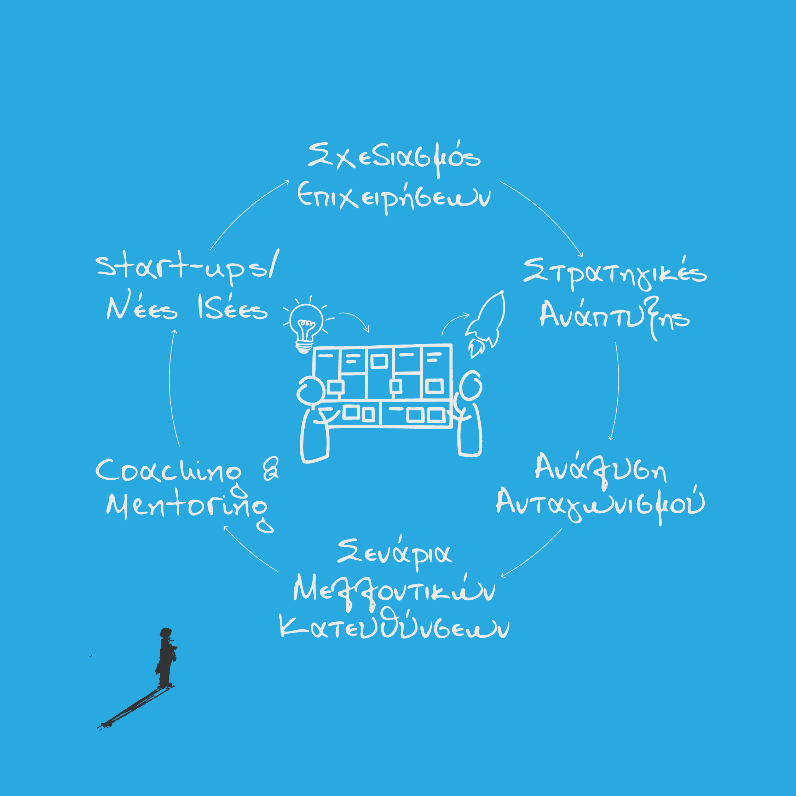
Όταν η ιδέα είναι δυνατή — αλλά η δομή δεν υπάρχει.
Σχεδιασμός νέων επιχειρήσεων, πρότασης αξίας, στρατηγικής. Για ιδρυτές που έχουν το όραμα αλλά χρειάζονται τη δομή για να το κάνουν βιώσιμο.
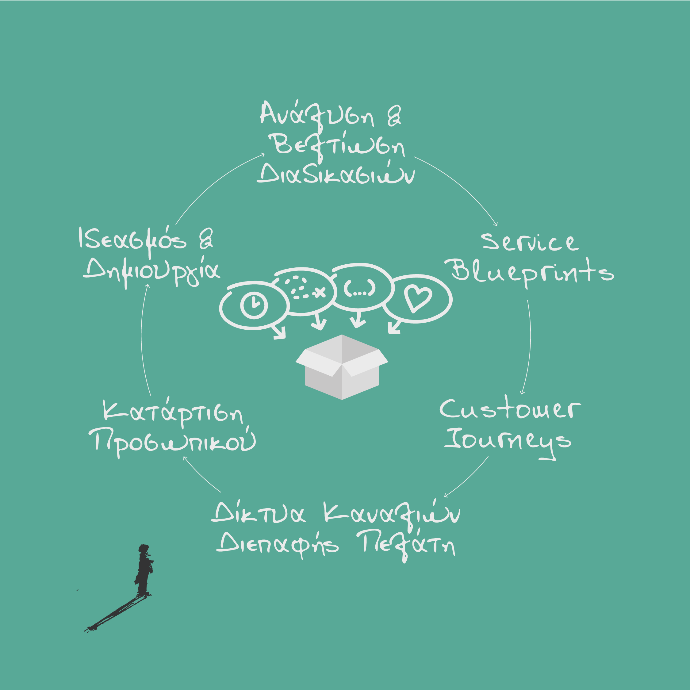
Όταν το προϊόν είναι καλό — αλλά η εμπειρία δεν είναι.
Service blueprints, customer journeys, ανάλυση σημείων επαφής, στρατηγική εμπειρίας. Για επιχειρήσεις όπου η ποιότητα μόνη δεν αρκεί — ολόκληρη η εμπειρία χρειάζεται σχεδιασμό.
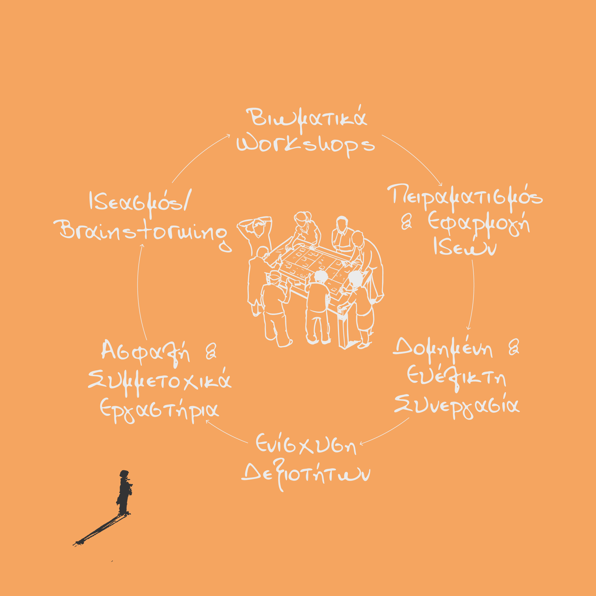
Όταν η ομάδα έχει γνώση — αλλά δεν μπορεί να την αξιοποιήσει μαζί.
Σχεδιασμός βιωματικών workshops, ανάπτυξη δημιουργικής αυτοπεποίθησης, ευθυγράμμιση ομάδας. Για οργανισμούς όπου τα σωστά άτομα είναι στο δωμάτιο αλλά οι σωστές συζητήσεις δεν γίνονται.
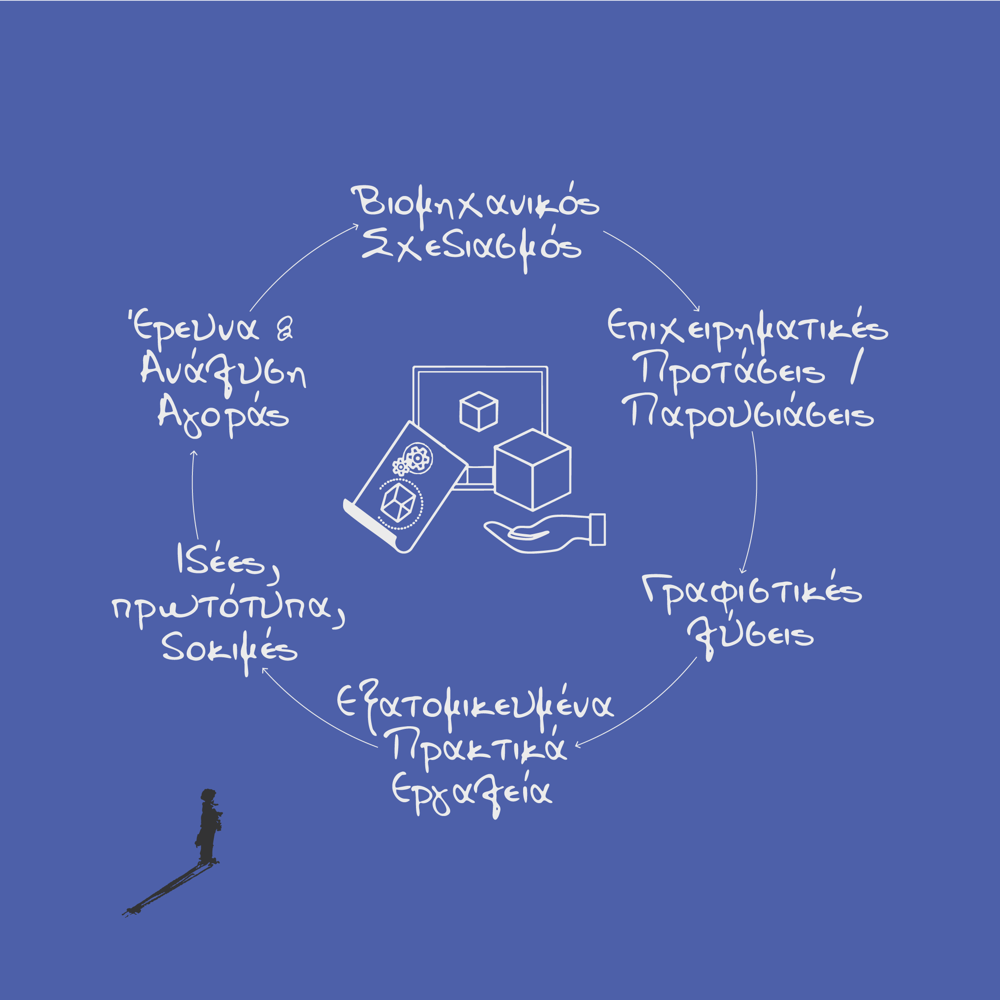
Όταν υπάρχει ζήτηση — αλλά καμία ξεκάθαρη πρόταση.
Ανάπτυξη ιδεών και εννοιών, διαμόρφωση προτάσεων αξίας, δημιουργία πρωτοτύπων και διερεύνηση της εφικτότητας. Από την αρχική σύλληψη μέχρι ολοκληρωμένες λύσεις έτοιμες για την αγορά.
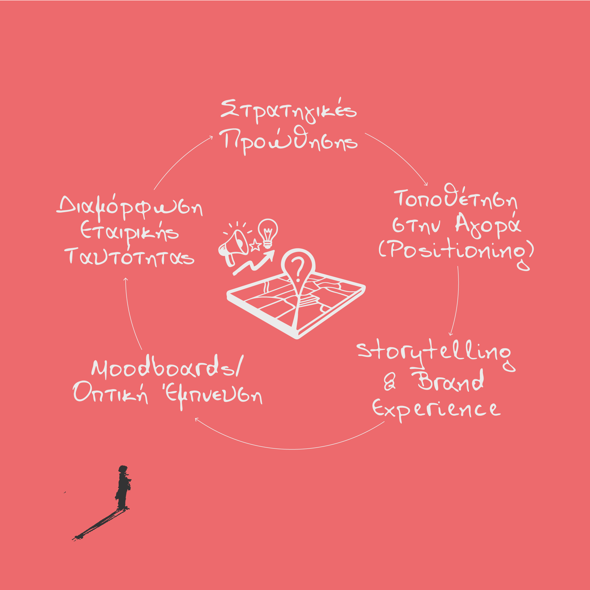
Όταν η δουλειά είναι εξαιρετική — αλλά κανείς δεν τη βλέπει.
Τοποθέτηση στην αγορά, ανάπτυξη εταιρικής ταυτότητας, storytelling, στρατηγική επικοινωνία. Για επιχειρήσεις που ανταγωνίζονται στην τιμή ενώ θα έπρεπε να ανταγωνίζονται στο νόημα.
Η δουλειά μας
Κάθε project ξεκινά με μια κατάσταση που χρειάζεται σαφήνεια — και τελειώνει με σχεδιασμένες λύσεις. Ορισμένες από τις προκλήσεις στις οποίες βοηθήσαμε.
Βιομηχανία · Σχεδιαστικός Μετασχηματισμός
Ένας εξειδικευμένος κατασκευαστής χρειαζόταν να μεταβεί από παραγωγική νοοτροπία σε σχεδιαστική, πελατοκεντρική προσέγγιση.
Χαρτογράφηση διαδικασιών με εξειδικευμένα οπτικά εργαλεία, συνεντεύξεις σε όλα τα επίπεδα, ανάδειξη κρυφών πρακτικών καινοτομίας.
Ένας οπτικός χάρτης της πραγματικής διαδικασίας καινοτομίας — αποκαλύπτοντας ότι είχαν ασυνείδητα εξωτερικεύσει μια κρίσιμη ικανότητα.
Οικογενειακή Επιχείρηση · Διαδοχή Γενεών
Ένας κατασκευαστής με ιστορία 100+ ετών βρισκόταν σε διαδοχή γενεών. Ένα βασικό πρόσωπο κατείχε κρίσιμη γνώση που δεν εμφανιζόταν σε κανένα οργανόγραμμα.
Εις βάθος χαρτογράφηση διαδικασιών, συνεντεύξεις πολλαπλών ενδιαφερομένων, εντοπισμός άτυπων δικτύων γνώσης.
Ο «Εκτιμητής» αποκαλύφθηκε ως ο κεντρικός μεσολαβητής καινοτομίας — αναδιαμορφώνοντας ριζικά τον τρόπο που η εταιρεία κατανοούσε τις ικανότητές της.
Δημόσιος Τομέας · Σύνθετο Πρόβλημα
Ένας οργανισμός του δημόσιου τομέα είχε δοκιμάσει πολλαπλές προσεγγίσεις σε ένα σύνθετο κοινωνικό πρόβλημα χωρίς αποτέλεσμα.
Εργαστήρια συν-δημιουργίας με ποικιλία ενδιαφερομένων, οπτική δημιουργία σεναρίων, δημιουργικό επαναπλαισίωμα.
Τρία δραστικά πλαίσια πρόκλησης — αντικαθιστώντας ένα συντριπτικό «wicked problem» με τρία design briefs.
Αγρο-διατροφή · Στρατηγική Ευκαιρία
Μια κρητική αγροδιατροφική επιχείρηση ήθελε να αναπτυχθεί αλλά δεν μπορούσε να δει πέρα από τις τρέχουσες λειτουργίες της.
Χαρτογράφηση επιχειρηματικής κατάστασης, αναγνώριση ευκαιριών, στρατηγική πλαισίωση — όλα μέσα σε μία δομημένη συνεδρία.
Εννέα διακριτές επιχειρηματικές ευκαιρίες — ένα χαρτοφυλάκιο στρατηγικών επιλογών αντί για μία μόνο διαδρομή.
F&B · Σχεδιασμός Εμπειρίας
Ένα νέο F&B εγχείρημα είχε ισχυρό concept προϊόντος αλλά δεν είχε σχεδιάσει την εμπειρία πελάτη.
Αρχές service design, χαρτογράφηση εμπειρίας, σχεδιασμός σημείων επαφής — πριν ανοίξουν οι πόρτες.
Μια ολοκληρωμένη στρατηγική εμπειρίας — ένας σκόπιμος σχεδιασμός του πώς θα νιώθουν οι πελάτες, όχι μόνο του τι θα τρώνε.
Ποιοι είμαστε
Το Locus Design + Innovation συνιδρύθηκε από τον Δρ. Μάνο Χατζάκη και τον Neil Smith — συνδυάζοντας πρακτική στρατηγικού σχεδιασμού με βαθιά έρευνα στον τρόπο που οι οργανισμοί πραγματικά καινοτομούν. Η πρακτική στηρίζεται σε ακαδημαϊκή έρευνα, δημοσιεύσεις σε κορυφαία επιστημονικά περιοδικά, και άμεση εμπλοκή με επιχειρήσεις κάθε κλίμακας.
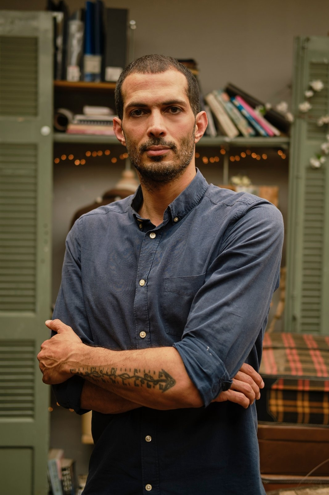
Συνιδρυτής & Διευθυντής
Στρατηγικός σχεδιαστής με διδακτορικό στην καινοτομία μέσω σχεδιασμού από το Northumbria University. Υπόβαθρο στον βιομηχανικό σχεδιασμό προϊόντων (BA, MA). Εξειδίκευση στη σχεδιαστική σκέψη, τον στρατηγικό σχεδιασμό, τη συν-δημιουργία και τα οπτικά εργαλεία χαρτογράφησης πολυπλοκότητας. Εδρεύει στα Χανιά, Κρήτη.
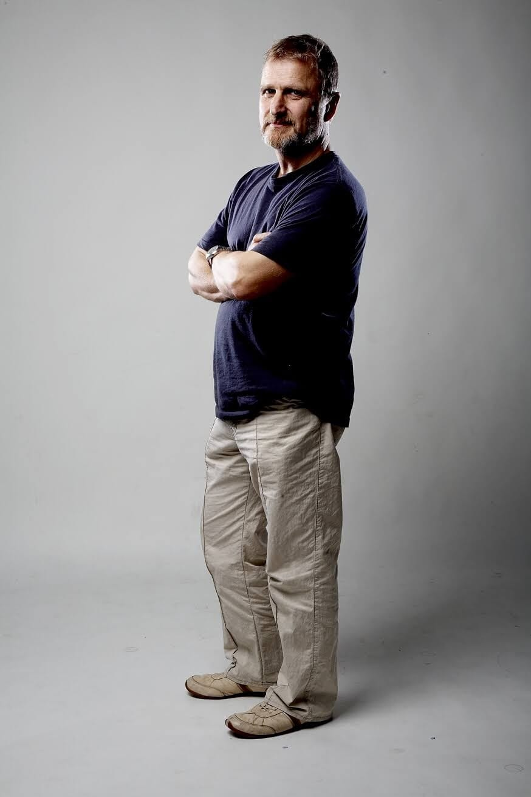
Συνιδρυτής & Διευθυντής
Επαγγελματίας καινοτομίας μέσω σχεδιασμού με εκτεταμένη εμπειρία στην οργανωσιακή συμπεριφορά, τη διευκόλυνση συν-δημιουργίας και την ανάπτυξη ικανοτήτων καινοτομίας σε οργανισμούς. Ειδικός στο να κατανοεί τι εμποδίζει ή επιτρέπει τη δημιουργική εργασία — και να σχεδιάζει τις συνθήκες για να ανθίσει. Εδρεύει στο Ηνωμένο Βασίλειο.
Το Locus συνεργάζεται με ένα επιμελημένο δίκτυο εξειδικευμένων συνεργατών — ερευνητές, facilitators, σχεδιαστές και τομεακούς ειδικούς — που συγκροτείται ανάλογα με τις ανάγκες κάθε έργου. Προσαρμόζουμε την ομάδα στην πρόκληση, όχι το αντίστροφο.
Οι σκέψεις μας
Στρατηγική
Μια διερεύνηση του κενού ανάμεσα στην πρόθεση και στο αποτέλεσμα — και γιατί η απάντηση δεν είναι περισσότερη προσπάθεια, δεδομένα ή εργαλεία.
Διαβάστε →Οργανισμοί
Σε κάθε οργανισμό που μελετήσαμε, τα άτομα που κάνουν τα πράγματα να γίνουν δεν ταιριάζουν με τα ονόματα στο διάγραμμα.
Διαβάστε →Μέθοδος
Το αντι-διαισθητικό εύρημα ότι η δυσανάλογη επένδυση χρόνου στην κατανόηση του προβλήματος παράγει δραματικά καλύτερα αποτελέσματα.
Διαβάστε →Επικοινωνία
Αν κάτι από αυτά σου μίλησε — ή αν έχεις μια πρόκληση που χρειάζεται σαφήνεια και δράση — επικοινώνησε μαζί μας. Το πρώτο βήμα είναι πάντα μια συζήτηση.
Μελετίου Πηγα 17, Χανιά, Κρήτη · Ηνωμένο Βασίλειο
Μια δομημένη στρατηγική συζήτηση 120 λεπτών — δια ζώσης ή online. Χαρτογραφούμε την κατάστασή σας, αναδεικνύουμε την πραγματική πρόκληση και εντοπίζουμε το σωστό επόμενο βήμα.
Η αμοιβή απορροφάται σε κάθε επόμενη συνεργασία.
€180 + ΦΠΑ
Κλείσε συνεδρία →